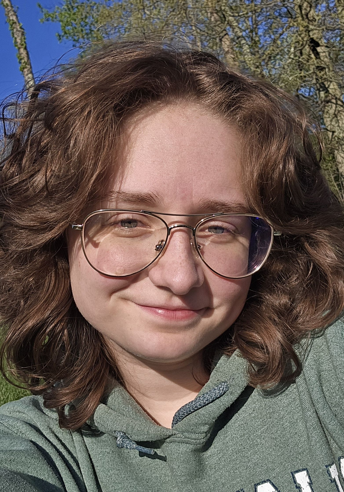

About Me
I'm Serena Warner, a senior at The College of Wooster majoring in Computer Science with minors in Mathematics and Statistical & Data Sciences.
My research interests center around using machine learning models to better social understanding and societal connection. I'm especially drawn to projects that explore how data can support reflection, identity, and understanding, whether through interactive AI systems or experimental prototypes.
For my year-long Independent Study (Wooster's undergraduate thesis), I plan to create an unsupervised machine learning model which takes input from a survey and classifies each individual into one personality grouping. I will use a self-created survey shared online and around the community to train the model. I will compare the results to other various personality theories.
Outside of academics, I serve as a STEM Success Initiative Intern, STEM Zone Intern, TA, and student leader in multiple campus orgs including Women's Club Rugby and Google Developer Student Club. I care deeply about making tech spaces more intuitive, expressive, and human.
I plan to pursue a Ph.D. in Social Computing or Applied Machine Learning with Psychology. I'm currently exploring programs with strong interdisciplinary mentorship and collaborative lab environments.
“I want to build systems that help people recognize themselves more clearly — not flatten them into categories, but give them something to hold onto in the fog.”
Thanks for stopping by. Feel free to explore my projects or reach out.